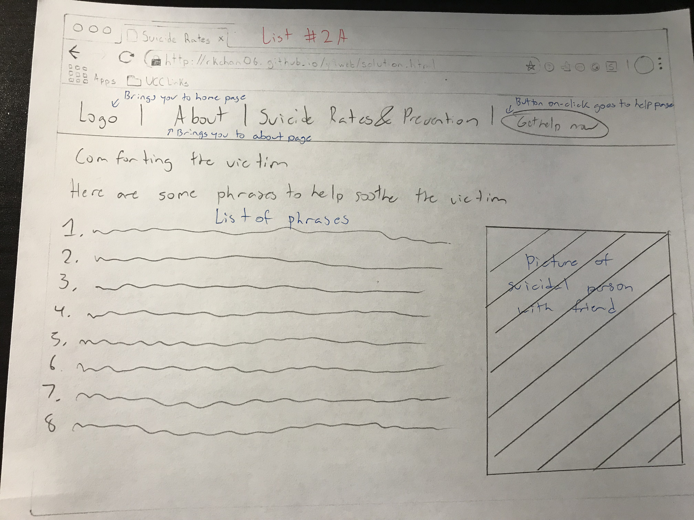

Suicide is the act of intentionally causing ones death. Most suicides are caused by stress from financial difficulties, troubles with relationships or bullying. Suicide is the 10th leading cause of death worldwide. The most common age gaps of suicide are between the ages of 15-29 and the ages of 30-49. On the World Health Organization website they have lots of data shown about crude suicide rates however, it is in the form of tabular data, a form that is misinterpreted by many. My goal is to use this valuable data and change it into a form that is comprehendable by everyone. In addition to this, I want to make my website a place to find advice on how to help suicidal people and to see how vulnerable they are. Lastly, I want to add suicide prevention numbers on the website to make it convinient for people.
Currently, the data presented on WHO website is in a tabular form which is difficult to be read by users trying to access the data. From research gathered in inquiry and analysis, I have decided that my idea to fix the tabular data would be to use website with access to all countries’ suicide rates. This will be in the form of an interactive graph in which when the user presses the data for say suicide rates in Algeria age 15-29 men, there would be a button and on click a graph would slowly rise to the correct point. This will help teachers students and others read the data easier. In short, the solution will be a website with data in the form of graphs and button widgets. The solution will also incorporate a suicide prevention part with access to the different phrases and questions to help the victim as well as the numbers to crisis prevention helpline. This is just a small add on to the project.
|
The success criteria to the problem would be: - The website has to be user friendly for my target audience, teachers. Teachers are normally not very good with technology so it has to be easy for them to navigate through the page - The interface has to be appealing to the target audience, students and teachers; who would usually prefer more dull colours such as navy as when projecting the website on the board for lessons, it may hurt the eyes of students trying to learn if it is a bright colour. More dull colours allow the students to focus on words and pictures instead of the bright bothersome background - The information on the website should be easy to access; all information has to be accessible using 3 clicks or less. People these days do not have patience especially with technology. If the user cannot find the content on time, the user will leave the page and go to a different page to find the desired information. The solution is the website has to have a banner across the top of the page with subcategories and pulldowns to access information easier -Data is presented in the form of buttons to graphs which makes it interactive between students and website. This way, they will pay more attention and retain the information better as they will be intrigued and focused. Funky buttons and graphs should be included to help the interactive aspect but it should not take away from learning the site's content. -Logo in top left of page has to be button to lead back to homepage. If a user becomes lost within the website page and simply wants to go back to the homepage without spamming the back button, the logo should be a reliable place to return to where you came from -A button that leads to a page with numbers to suicide crisis prevention hotlines. If needed, this is just a page with the numbers to crisis prevention hotlines. Every suicide website should have this as many suicidal people seek help online and every time a suicidal person calls a number, they save one life. |
All the main categories are in the banner with sub categories such as different countries are in the pulldown menus when mouse hovers over main category
The graphs appear slowly after the button is clicked. To change different countries, scroll down in the pulldown bar in the banner
The list is accessed through the banner. No fancy features at all, just text for advice
The "Get Help Now" section is the exact same thing with the sdifferent designs just the banner is different
All the main categories are located in the body of the website's homepage with sub categories such as different countries are in the pulldown menus when mouse hovers over main category
The graphs appear slowly after the button is clicked. To change different countries, scroll down in the pulldown bar in the banner. Beside the graphs and buttons is a list of the countries in which you can scroll up and down to find countries
The list is accessed through the banner. No fancy features at all, just text for advice. Same as design #1 except the banner is different
The "Get Help Now" section is the exact smae thing with the sdifferent designs just the banner is different
I have decided to proceed with design idea #1. While both designs seemed to be decent, I prefered design #1 in reference to my success criteria. The first success criteria was that it had to be user friendly. In design 2, the topics are shown on the homepage and not in the banner. This makes it difficult to change topics of discussion. Design #1 has all categories in the banner making it easier to change between topics. This requires 1 click to change topics while the other one requires 2 clicks (logo to homepage then press the topic). The second success criteria is not relevant to deciding as colour scheme can easily be changed. The third success criteria is about a limited amount of mouse clicks to find a topic. While both require the same amount of mouse clicks (2), Design #1 requires one less click in order to switch topics. The last 3 success criteria are the same in the websites so they are not applicable. In addition, the pulldown boxes from the banner make the website more aesthetically pleasing. There is more to do on Design #1 allowing it to reach a high degree of effectiveness at communicating its broad ideas and content. This shows a clear justification that Design #1 is better or the same as Design #2 in all aspects. I look forward to creating this wonderful solution
The final design should look something like this with colour scheme of blue and yellow
Due to the fact that there are many different pages in the website, the html, css and java script functions necessary to learn the program are all combined into one. Html is the predominant skill needed with css used a little bit to change borders, padding, colours, fonts, button shapes etc. Java script will be used on the graphs meaning javascript will be the function that allows the user to see graphs after pressing the button. Html is represented by blue and css is represented in red.
The homepage requires a lot of skills from html. The banner across the top of the page is a table and the text on to uses links, dropboxes and buttons. To make the banner look less retro and more modern, the banner needs css skills such as background colour, button shape changing and font changes. Next, the image on the homepage will be blurred using css functions. The text (header 1) will be overlapping the image so I will need to learn container. in css. The about section is just plain text so just html (h4) and (p) will be needed.

For the data section of the website, it uses html and css but javascript is the main juice of he website. There will have to be a script function that says move the bar to the correct spot at a certain speed. This is something new I will have to learn. The function would then be used by the button on the left that says when the button is clicked, the function will be activated. CSS will be used to change the shapes of buttons, font size and colours, and background. Html will be used for headers and text.

The lists part of the website is almost all html. It is simple, headers and text will be used as well as an image to compliment the text. CSS will be used to change colour of text and background (I forgot to add these in the images).

Lastly, the get help now section will use html and css once again. Headers and subheading are vital and images to show what type of communication needed are on the page. I will need to put this into a table to make things look more organized (I accidentally put table in red insead of blue). CSS will be used to change the border size and colour and padding will be used to make things neater. I will also use CSS for the bacground colours.